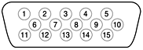

VGA Connector
In addition to the ADC connector, the graphics card also has
a VGA connector. The VGA connector is a three-row DB-9/15 (also
called mini sub D15) connector for use with a VGA, SVGA, or XGA
monitor. Figure 3-5 shows the pin configuration and Table 3-10 lists
the signals and pin assignments.
Figure
3-5 Analog monitor connector

Table
3-10 Signals on the video connector
| Pin |
Signal name |
Description |
| 1 |
RED |
Red video signal |
| 2 |
GREEN |
Green video signal |
| 3 |
BLUE |
Blue video signal |
| 4 |
n.c. |
No connect |
| 5 |
GND |
Ground |
| 6 |
RED_RTN |
Red video signal return |
| 7 |
GREEN_RTN |
Green video signal return |
| 8 |
BLUE_RTN |
Blue video signal return |
| 9 |
n.c. |
No connect |
| 10 |
GND |
Ground |
| 11 |
n.c. |
No connect |
| 12 |
SDA |
I2C data |
| 13 |
HSYNC |
Horizontal synchronization signal |
| 14 |
VSYNC |
Vertical synchronization signal |
| 15 |
SCL |
I2C clock |
© 2002 Apple Computer, Inc. (Last Updated January 16, 2002)